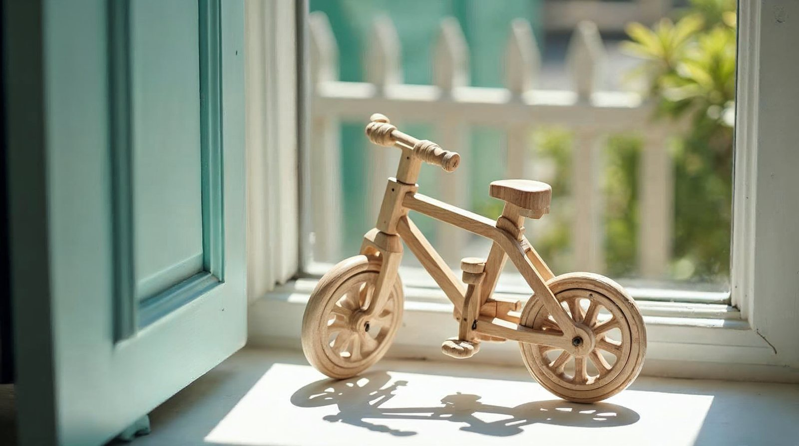
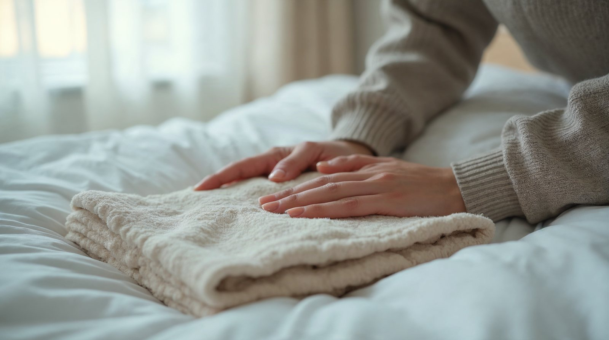
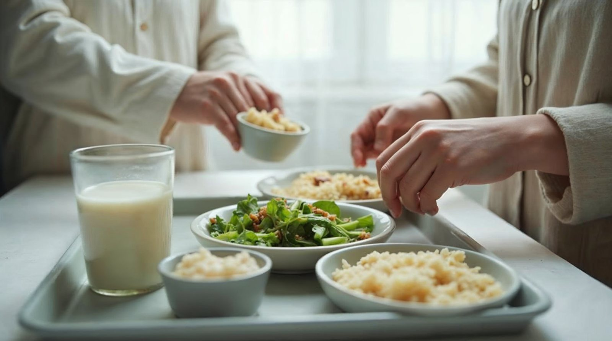
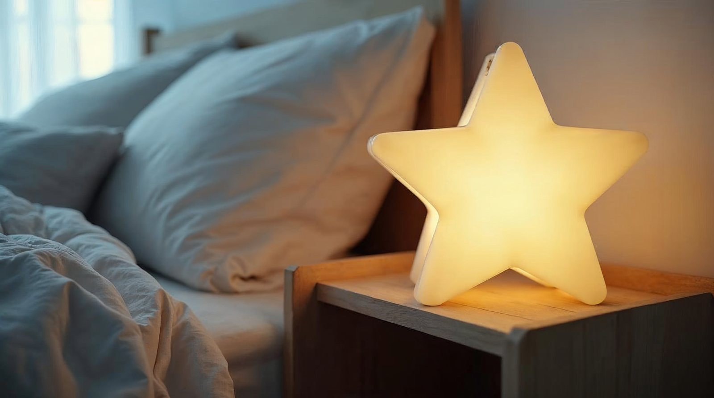
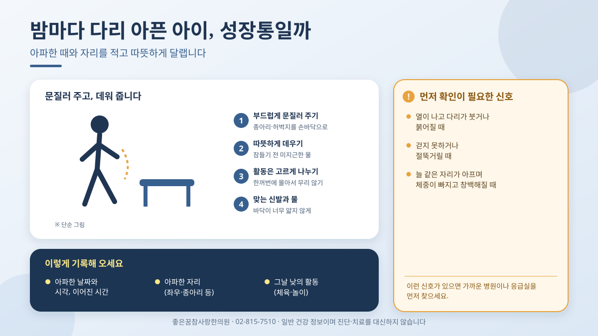

이종호 한의사 감수좋은꿈참사랑한의원 대표원장 (한의사 면허번호 19769)발행 2026-11-26 · 수정 2026-11-26
이 글의 차례
밤 열한 시, 잠든 줄 알았던 아이가 울먹이며 방문을 엽니다. "엄마, 다리가 아파." 종아리와 무릎 뒤를 문질러 달라고 해서 한참을 주물러 주면 겨우 다시 잠이 듭니다. 그런데 아침이 되면 아무 일 없었다는 듯 뛰어서 등교합니다. 이런 밤이 일주일에 몇 번씩 반복되니, 이게 말로만 듣던 성장통인지, 혹시 다른 병은 아닌지 마음이 쓰입니다.
성장통은 주로 만 3세에서 12세 사이의 아이들이 저녁이나 밤에 다리, 특히 종아리와 허벅지 앞, 무릎 뒤를 아파하는 것을 두루 일컫는 말입니다.
이름은 '자라서 아프다'는 뜻처럼 들리지만, 실제로 뼈가 자라는 속도 때문에 아프다는 근거는 뚜렷하지 않다고 알려져 있습니다. 그래서 요즘은 '아이에게 흔한, 특별한 원인이 없는 밤 다리 통증'으로 이해하는 쪽이 많습니다.
진료실에서 부모님들은 대개 두 가지를 걱정하십니다. 혹시 큰 병을 놓치고 있는 건 아닌지, 그리고 키가 크려고 아픈 거라면 괜찮은 건지입니다. 밤마다 아이 다리를 주무르며 잠을 설치시는 부모님의 피곤함도 크십니다. 그 마음을 충분히 알기에, 저는 먼저 성장통의 전형적인 모양과 그렇지 않은 모양을 함께 나눠 드립니다.
성장통 자체는 대개 시간이 지나며 저절로 줄어드는 경우가 많습니다. 다만 비슷하게 보이는 다른 원인을 놓치지 않는 것, 그리고 아이와 부모님이 밤을 조금 더 편하게 보내도록 돕는 것이 중요합니다.

성장통은 어떤 모양으로 나타날까요
성장통에는 꽤 일정한 모양이 있습니다. 아래 특징이 대부분 맞는다면 성장통일 가능성이 높다고 봅니다.
- 저녁이나 한밤중에 아프고, 아침에는 아프지 않다
- 한쪽만이 아니라 양쪽 다리가 아프거나, 날마다 아픈 쪽이 바뀐다
- 관절 자체보다 종아리, 허벅지 앞, 무릎 뒤처럼 근육 부위가 아프다
- 문질러 주거나 안아 주면 편해한다
- 다리가 붓거나 붉어지지 않고, 걷거나 뛰는 모양이 평소와 같다
- 낮에는 잘 놀고, 열이 나거나 기운이 없지 않다
통증은 몇 분에서 길게는 한두 시간 이어지기도 하고, 며칠 잠잠하다가 다시 오기도 합니다. 낮에 유난히 많이 뛰어논 날 밤에 더 아파한다고 말씀하시는 부모님이 많습니다.
아이들은 아픈 곳을 정확히 짚지 못하는 경우가 많습니다. "다리 전체가 아파"라고 하거나, 짚는 곳이 매번 다르기도 합니다. 그래서 아이가 아파할 때 어디를 문질러 달라고 하는지 부모님이 기억해 두시면 도움이 됩니다.
왜 밤에 다리가 아플까요
정확한 원인은 아직 하나로 정리되지 않았습니다. 낮에 많이 뛰고 놀면서 쌓인 근육의 피로가 밤에 쉬는 동안 통증으로 느껴진다는 설명이 가장 흔합니다. 다리 근육이 뼈가 자라는 속도를 따라가며 당겨지는 느낌이라는 이야기도 있습니다.
평발이나 무릎이 안쪽으로 모이는 다리 모양처럼, 걸을 때 다리에 부담이 더 가는 아이에게 더 자주 보인다는 이야기도 있습니다. 통증을 더 예민하게 느끼는 아이, 낮에 긴장이나 스트레스가 많았던 아이에게서 잦아진다고 보기도 합니다. 부모 가운데 어릴 때 비슷한 경험을 한 분이 많다는 점도 자주 듣습니다.
한의학에서는 아이를 기운이 왕성하게 자라는 시기로 보고, 그만큼 쓰는 것도 많아 쉽게 지친다고 보았습니다. 낮에 많이 쓰고 밤에 회복하는 흐름 속에서, 근육과 힘줄을 기르는 기운이 부족하거나 몸이 찬 아이가 밤에 다리를 더 아파한다고 여겨 왔습니다. 그래서 저는 다리만 보지 않고 아이의 식사, 잠, 체온, 낮의 활동을 함께 여쭙습니다.
성장통과 다르게 살펴야 하는 경우
성장통의 전형적인 모양에서 벗어나는 점이 있다면, 다른 원인을 먼저 확인해야 합니다. 이 구분이 이 글에서 가장 중요한 부분입니다.
늘 같은 쪽, 같은 자리만 아파한다면 그 자리를 따로 살펴봐야 합니다. 성장통은 대개 양쪽이거나 자리가 바뀌는데, 한 자리만 계속 아프다면 뼈나 관절 자체의 문제일 수 있어 정형외과나 소아청소년과에서 사진을 찍어 보시길 권합니다.
아침에도 아파하거나, 낮에 놀다가 절뚝거리거나, 관절이 붓고 만지면 따뜻하다면 관절의 염증을 생각해야 합니다. 감기를 앓은 뒤 며칠 지나 고관절이 아파 절뚝거리는 경우도 아이에게 흔히 보이는데, 이것도 소아청소년과나 정형외과에서 확인이 필요합니다.
운동을 많이 하는 초등학교 고학년이나 중학생이 무릎뼈 아래 튀어나온 뼈나 발뒤꿈치를 아파한다면, 성장기 아이의 뼈가 힘줄에 당겨 생기는 다른 문제를 생각합니다. 이 경우는 밤보다 운동할 때와 운동 직후에 아프다는 점이 다릅니다.

밤의 다리 불편, 다른 모양도 있습니다
다리가 아프다기보다 '간질간질하다', '벌레가 기어가는 것 같다', '가만히 있을 수 없다'고 표현하며 잠자리에서 다리를 자꾸 움직인다면 하지불안 증상을 생각해 볼 수 있습니다. 아이들은 이 느낌을 '아프다'고 말하기도 해서 성장통과 헷갈리기 쉽습니다.
하지불안은 철분이 부족한 아이에게서 더 보인다고 알려져 있습니다. 아이가 편식이 심하거나 얼굴이 창백하고 쉽게 지친다면 소아청소년과에서 혈액 검사로 철분 수치를 확인해 보시길 권합니다.
밤에 다리에 쥐가 나서 종아리가 딱딱하게 뭉치며 아파하는 경우도 있습니다. 낮에 땀을 많이 흘리고 물을 적게 마신 날, 많이 뛰어논 날 잘 생깁니다. 이럴 때는 발끝을 몸 쪽으로 천천히 당겨 주면 풀리는 경우가 많습니다.
먼저 이렇게 여쭙니다
아이와 부모님을 함께 뵙고, 저는 대략 이런 순서로 여쭙니다.
- 언제부터, 일주일에 몇 번쯤 아파하나요? 주로 몇 시쯤인가요?
- 어디를 문질러 달라고 하나요? 양쪽인가요, 한쪽인가요?
- 아침에 일어났을 때나 낮에 놀 때도 아파하거나 절뚝거린 적이 있나요?
- 다리가 붓거나 빨갛거나, 만졌을 때 따뜻한 적이 있었나요?
- 그날 낮에 운동이나 바깥 놀이를 많이 했나요?
- 식사는 잘 하는지, 편식이 심한지, 잠들기 전 다리를 자꾸 움직이지는 않는지요?
아이에게도 직접 물어봅니다. 어떻게 아픈지 아이의 말로 들어 보면, 쑤신다, 당긴다, 간지럽다처럼 부모님이 미처 몰랐던 표현이 나오기도 합니다.
일상에서 먼저 해 볼 수 있는 것
성장통은 아이와 부모님이 밤을 어떻게 보내느냐가 가장 큰 숙제입니다. 아래 방법 가운데 아이에게 맞는 것을 골라 보세요.
- 아파할 때 종아리와 허벅지를 손바닥으로 부드럽게 문지르거나 감싸 주기
- 따뜻한 수건이나 따뜻한 물로 다리를 데워 주기, 잠들기 전 미지근한 물로 씻기
- 낮에 많이 뛰어논 날은 잠들기 전 종아리와 허벅지 뒤를 가볍게 늘여 주기
- 하루 활동량은 줄이기보다 고르게, 한꺼번에 몰아서 무리하지 않도록 나누기
- 발에 맞고 바닥이 너무 얇지 않은 신발 신기기
- 물을 자주 마시게 하고, 끼니를 고르게 챙기기
무엇보다 아이를 안심시켜 주는 것이 중요합니다. "또 아파?" 하는 지친 목소리보다, "많이 놀아서 다리가 피곤한가 보다, 엄마가 문질러 줄게"라는 말이 아이를 편하게 합니다. 아이가 통증을 무서워하면 더 예민하게 느끼기도 합니다.
잠자리 리듬도 함께 봅니다. 늦게까지 휴대폰을 보거나 잠드는 시각이 들쭉날쭉하면 다리 불편이 더 크게 느껴질 수 있습니다. 잠들기 30분 전에는 화면을 끄고, 다리를 문질러 주며 하루 이야기를 나누는 시간으로 바꿔 보시길 권합니다.

낮의 생활과 식사도 함께 봅니다
밤의 다리 통증은 낮의 생활과 이어져 있는 경우가 많습니다. 학교 체육, 방과 후 축구, 학원 사이를 뛰어다니는 시간까지 더하면 아이가 하루에 쓰는 다리의 양은 어른의 생각보다 훨씬 많습니다. 주말에 몰아서 놀고 평일에는 거의 움직이지 않는 아이도 있는데, 이렇게 들쭉날쭉한 활동이 밤의 불편을 키우기도 합니다.
식사도 함께 봅니다. 아침을 거르고 간식으로 배를 채우는 아이, 고기나 채소를 거의 먹지 않는 아이는 근육이 회복하는 데 필요한 재료가 부족할 수 있습니다. 끼니마다 단백질 반찬 하나, 하루 한 번 우유나 요구르트, 제철 과일을 고르게 챙겨 보시길 권합니다.
몸이 찬 아이도 눈여겨봅니다. 손발이 늘 차고, 찬 음료를 즐기며, 겨울이면 유난히 웅크리는 아이가 밤에 다리를 더 아파한다고 말씀하시는 부모님이 계십니다. 잠옷은 발목까지 덮는 것으로, 이불은 다리를 따뜻하게 감싸도록 챙겨 주세요.
부모님의 밤도 중요합니다. 일주일에 몇 번씩 아이 다리를 주무르느라 깨다 보면 부모님도 지치십니다. 아이가 아파한 날 누가 돌볼지 미리 나눠 두고, 문지르는 방법을 아이 스스로도 익히게 하면 밤이 조금 수월해집니다.
한의원에서 함께 살필 수 있는 경우
- 성장통의 전형적인 모양이지만 밤에 깨는 날이 잦아 아이와 가족의 잠이 흔들리는 경우
- 낮에 쉽게 지치고 식사량이 적으며 손발이 찬 아이가 밤마다 다리를 아파하는 경우
- 다리 피로와 함께 잠들기 어려워하거나, 자면서 땀을 많이 흘리는 경우
- 소아청소년과나 정형외과에서 특별한 이상이 없다는 말을 들었지만 불편이 이어지는 경우
좋은꿈참사랑한의원에 처음 오시면 아이의 맥부터 짚고, 앞에서 말씀드린 다리 진찰에 더해 발 모양도 함께 봅니다.
그 뒤 진찰한 내용을 바탕으로 아이에게 맞는 생활 조언과 함께, 아이가 받아들일 수 있는 범위의 관리나 한약 상담 가운데 지금 상태에 맞는 것을 정합니다. 아이가 침을 무서워한다면 억지로 하지 않고, 부드러운 방법부터 함께 찾습니다. 소아청소년과 진료가 필요한 부분은 그대로 이어 가시도록 안내합니다.
다시 오시면 지난번 정한 것 하나가 실제로 어땠는지부터 이어서 듣습니다. 잠들기 전 다리 문지르기를 해 보셨다면 밤에 깬 횟수가 어땠는지, 낮의 활동을 나눠 보셨다면 아이가 어떻게 지냈는지를 여쭙습니다.
이렇게 기록해 오시면 상담이 쉬워집니다
아이의 밤 다리 통증은 진료실에서는 잘 보이지 않습니다. 2주 정도만 짧게 적어 보세요.
- 아파한 날짜와 시각, 이어진 시간
- 아파한 자리(오른쪽·왼쪽, 종아리·허벅지·무릎 뒤)
- 그날 낮의 활동(체육, 학원, 바깥 놀이 시간)
- 문질러 주기, 따뜻하게 하기 가운데 도움이 된 것
- 잠든 시각과 깬 시각, 그날의 식사량
빠진 날이 있어도 괜찮습니다. 아파한 날과 그렇지 않은 날을 나란히 놓으면 아이만의 흐름이 보이기 시작합니다.

아이의 밤을 함께 지키며
성장통은 아이도 부모님도 지치게 하지만, 대개 시간이 지나며 조금씩 줄어드는 경우가 많습니다. 그 사이 우리가 할 일은 다른 원인을 놓치지 않는 것, 그리고 아이가 아플 때 혼자가 아니라고 느끼게 해 주는 것입니다.
아이들은 생각보다 부모님의 표정을 잘 읽습니다. 부모님이 걱정스러운 얼굴로 다리를 만지면 아이도 덩달아 겁을 먹고, 담담하게 문질러 주면 아이도 금세 편안해집니다. 다른 원인을 확인할 것은 확인하되, 성장통이라고 판단된 뒤에는 조금 마음을 놓으셔도 괜찮습니다.
이번 주에는 하나만 골라 보세요. 잠들기 전 5분 다리 문질러 주기, 화면 끄는 시각 정하기, 아파한 날 짧게 적어 두기. 다음에 오시면 그 하나가 아이의 밤에 어떻게 닿았는지부터 여쭙겠습니다.
이런 증상은 먼저 확인이 필요합니다
- 열이 나면서 다리를 아파하거나, 다리나 관절이 붓거나 붉어진 경우, 절뚝거리거나 걷지 못하는 경우
- 늘 같은 자리가 밤에 깰 만큼 심하게 아프거나, 이유 없이 체중이 빠지거나, 멍이 잘 들거나 창백해진 경우
이런 신호가 있으면 한의원보다 가까운 병원이나 응급실을 먼저 찾으세요.
함께 읽으면 좋은 글
- 아이가 밤마다 다리가 아프다고 할 때는 무엇을 먼저 살피나요?
- 아이 키가 작은 것 같을 때 한의원에서는 무엇을 먼저 확인하나요?
- 키 걱정에 아이를 일찍 재우려는데 잠자리에서 계속 버틸 때는 어떻게 살피나요?
- 아이가 자면서 땀을 흠뻑 흘릴 때는 무엇을 먼저 살피나요?
- 아이가 휴대폰을 보다가 밤늦게 잠들 때는 어떻게 바꿔 갈 수 있을까요?

여쭙는 것
- 언제부터, 일주일에 몇 번쯤 아파하나요? 주로 몇 시쯤인가요?
- 어디를 문질러 달라고 하나요? 양쪽인가요, 한쪽인가요?
- 아침에 일어났을 때나 낮에 놀 때도 아파하거나 절뚝거린 적이 있나요?
생활에서 해 볼 것
- 아파할 때 종아리와 허벅지를 손바닥으로 부드럽게 문지르거나 감싸 주기
- 따뜻한 수건이나 따뜻한 물로 다리를 데워 주기, 잠들기 전 미지근한 물로 씻기
- 낮에 많이 뛰어논 날은 잠들기 전 종아리와 허벅지 뒤를 가볍게 늘여 주기
한의원에서 함께 살필 것
- 성장통의 전형적인 모양이지만 밤에 깨는 날이 잦아 아이와 가족의 잠이 흔들리는 경우
- 낮에 쉽게 지치고 식사량이 적으며 손발이 찬 아이가 밤마다 다리를 아파하는 경우
- 다리 피로와 함께 잠들기 어려워하거나, 자면서 땀을 많이 흘리는 경우
먼저 확인이 필요한 신호
- 열이 나면서 다리를 아파하거나, 다리나 관절이 붓거나 붉어진 경우, 절뚝거리거나 걷…
- 늘 같은 자리가 밤에 깰 만큼 심하게 아프거나, 이유 없이 체중이 빠지거나, 멍이…
한눈에 보는 표
| 구분 | 핵심 |
|---|---|
| 여쭙는 것 | 언제부터, 일주일에 몇 번쯤 아파하나요? 주로 몇 시쯤인가요? 어디를 문질러 달라고 하나요? 양쪽인가요, 한쪽인가요? |
| 생활에서 해 볼 것 | 아파할 때 종아리와 허벅지를 손바닥으로 부드럽게 문지르거나 감싸 주기 따뜻한 수건이나 따뜻한 물로 다리를 데워 주기, 잠들기 전 미지근한 물로 씻기 |
| 한의원에서 함께 살필 것 | 성장통의 전형적인 모양이지만 밤에 깨는 날이 잦아 아이와 가족의 잠이 흔들리는 경우 낮에 쉽게 지치고 식사량이 적으며 손발이 찬 아이가 밤마다 다리를 아파하는 경우 |
| 먼저 확인이 필요한 신호 | 열이 나면서 다리를 아파하거나, 다리나 관절이 붓거나 붉어진 경우, 절뚝거리거나 걷지 못하는 경우 늘 같은 자리가 밤에 깰 만큼 심하게 아프거나, 이유 없이 체중이 빠지거나, 멍이 잘 들거나 창백해진 경우 |
자주 묻는 질문
성장통이 있으면 키가 잘 크고 있다는 뜻인가요?
성장통이라는 이름과 달리, 밤 다리 통증과 키가 크는 속도 사이의 관계는 뚜렷하지 않다고 알려져 있습니다. 키가 걱정되신다면 성장 곡선과 잠, 식사를 따로 살펴보는 것이 좋습니다.
성장통이 있으면 운동을 줄여야 하나요?
운동을 끊기보다 한꺼번에 몰아서 많이 하지 않도록 고르게 나누는 쪽을 권합니다. 많이 뛴 날은 잠들기 전 다리를 가볍게 늘이고 문질러 주세요.
성장통은 언제까지 가나요?
아이마다 다르지만 몇 달에서 몇 년에 걸쳐 오다 말다 하다가, 자라면서 줄어드는 경우가 많습니다. 아픈 모양이 달라지거나 낮에도 아파한다면 다시 확인해 보시길 권합니다.
아이가 침을 무서워하는데 한의원 진료를 받을 수 있나요?
아이가 받아들일 수 있는 방법부터 함께 찾습니다. 진맥과 진찰, 생활 조언만으로 시작하는 경우도 많고, 침은 아이와 보호자께서 동의하실 때만 합니다.
아파할 때 진통제를 먹여도 되나요?
통증이 심해 잠을 못 이룰 때 소아청소년과에서 안내받은 용량으로 쓰는 경우가 있습니다. 자주 필요할 만큼 아파한다면 약에 기대기 전에 다른 원인이 없는지 소아청소년과에서 먼저 확인해 보시길 권합니다.
좋은꿈참사랑한의원은 재진 때 지난번 이야기부터 이어서 여쭙니다. 진료시간과 예약은 오시는 길에서 확인하세요.
어디서 상담받을 수 있나요?
좋은꿈참사랑한의원은 서울 동작구 만양로2길 2 신성빌딩 3층·5층(서울 동작구 상도동, 7호선 상도역 3번 출구 근처)에 있습니다. 한의사 3명(이종호 대표원장, 조영기 수석진료원장, 정원영 진료원장)이 진료합니다. 진료시간은 평일 09:30~20:00(점심 13:00~14:00), 토·일·공휴일 09:30~15:00이며, 방문 전 전화로 확인을 권합니다. 예약은 네이버 예약, 카카오톡 상담, 전화 02-815-7510로 받습니다.
이 글은 일반적인 건강 정보이며 개인의 진단이나 치료를 대신하지 않습니다. 증상이 있거나 복용 중인 약이 있다면 진료를 통해 확인하세요. 치료 효과는 개인마다 다를 수 있습니다.
작성 기준: 일반적으로 알려져 있는 건강 정보를 참고해 정리했습니다(대표원장 감수). 증상 기록은 1~2주 동안 하루 1회, 비슷한 시간에 적어 오시면 지난 상태와 비교하기 쉽습니다.